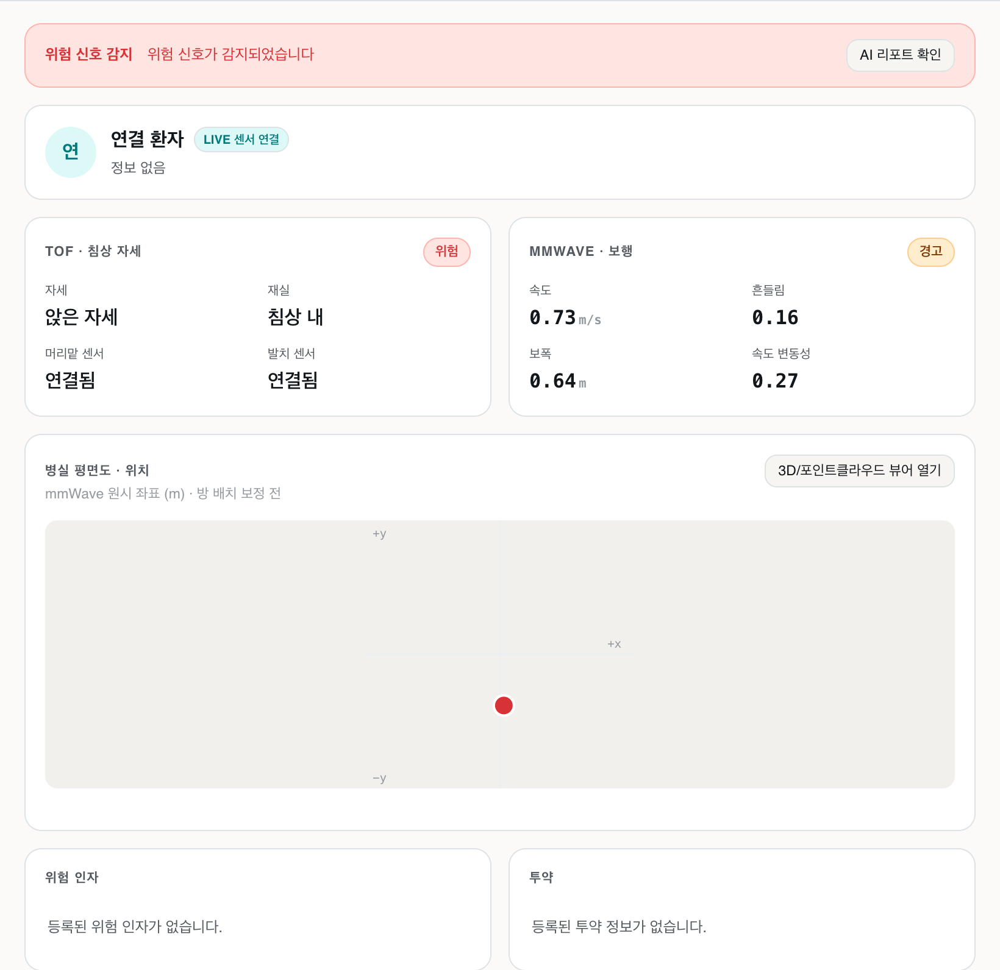
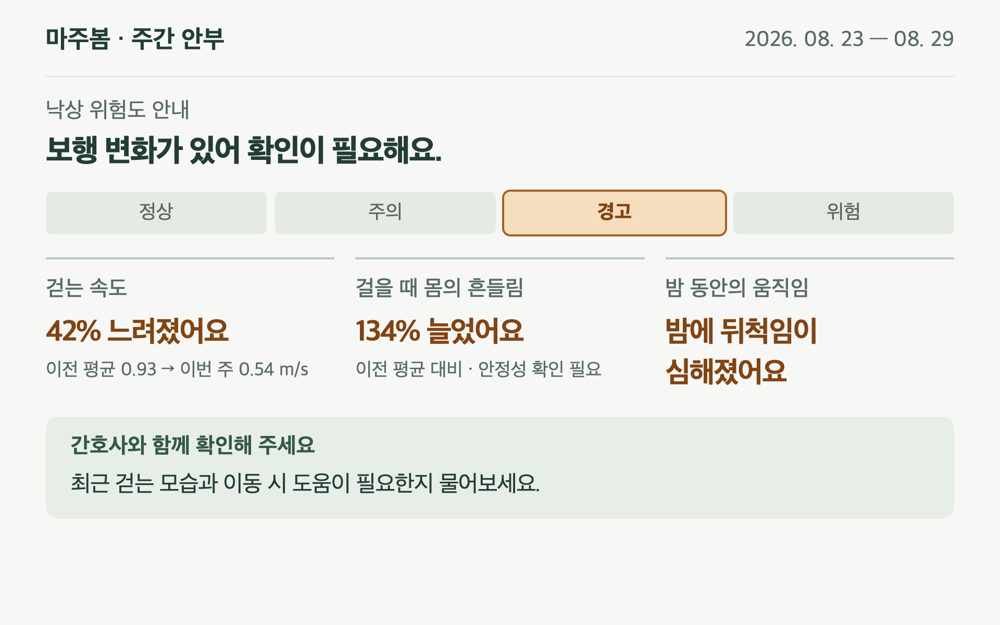

치매 어르신의 낙상, 넘어지기 전에 알립니다.
손목밴드로 식사·활동 패턴 확인벗어버리면 관찰도 끊김
착용·조작 불필요평소 행동과 생활 습관 유지
호흡 신호로 침대에 있는지 확인넘어진 뒤 낙상 감지 · 사후 처리
평소 대비 보행 변화 확인침상 이탈 움직임과 연계
출처 · CarePredict 사용 방식 · Milesight VS373 제품 사양
영상 저장 없음 · 모든 처리는 병실 안 게이트웨이에서 종료

위험 알림 확인센서 상태를 보고 현장 대응

주간 보행 변화와 관찰 내용 확인누적 기록을 통한 경과 파악
환자 본인 · 잠든 어르신을 깨우는 별도 알림 없음
간호사: 기존 대시보드 · 보호자: 주간 안부 UI 디자인 예시 · 테스트·합성 데이터 사용 · 클릭하여 확대
Enter 재생·일시정지 · F 전체화면
넘어진 뒤에 달려가는 게 아니라침대에서 나오기 전에 곁에 있겠습니다.